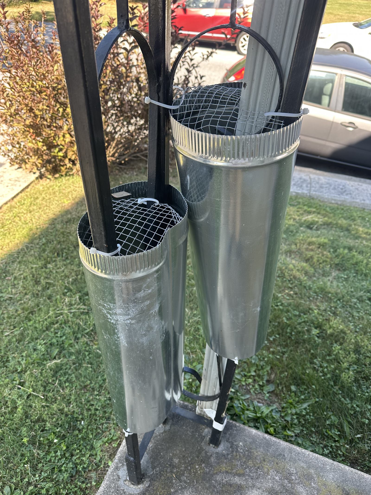

What Harrisburg Wildlife Calls Actually Look Like
Harrisburg's housing stock is what drives the wildlife problem. The city's older row homes and inner suburbs (Allison Hill, Bellevue Park, Penbrook, Paxtang) were built when soffit returns were nailed in by hand — lots of gaps. Outer suburbs (Colonial Park, Lower Paxton, Susquehanna Township) sit on Wildwood Park, Boyd Big Tree Preserve, and the Susquehanna riverfront, so there's constant wildlife pressure from adjacent woodland.
The seasonal pattern is reliable: squirrels move into attics in February–March to give birth, groundhogs den under decks in April–May, raccoons in chimneys May–July, and bats in soffits late summer before fall migration. The fix isn't just removal — it's removal plus closing the entry so they don't come back next season.


Wildlife We Handle in Harrisburg
Squirrels in Attics
The #1 Harrisburg wildlife call from January through April. Gray squirrels giving birth in attics or wall voids. Live-trap removal, then full soffit/eave exclusion so the entry doesn't reopen. Babies handled with mom — we don't separate or leave nestlings to die in a wall.
Groundhogs (Woodchucks)
Den under decks, sheds, porches, retaining walls — anywhere they can dig protected. Common in Lower Paxton, Susquehanna Township, and any property with raised structures over dirt. Live-trapping and exclusion barriers (buried L-flashing) to prevent re-entry.
Raccoons in Chimneys & Attics
Females raise litters in chimney flues every spring, especially in older Harrisburg city homes with uncapped clay flues. Removal of the mother and kits together, chimney cap installation, exclusion work where needed. Never leave kits behind.
Skunks Under Sheds & Porches
The smell tells you. Live-trap with directional exclusion, relocation, and barrier installation. Doing this without prior NWCO experience is how people get sprayed — leave it to us.
Bats in Soffits & Attics
Pennsylvania-protected species, so the approach is exclusion-only (one-way valves), never lethal trapping. Timing matters — we can't do exclusion during the maternity colony period (mid-May through July) when flightless pups are inside. Outside that window, fast and humane.
Entry Point Walk-Through (Sealing Optional)
We'll always identify every entry point on your structure and explain what needs to be sealed. Sealing itself is an optional add-on at additional cost — most clients handle the closure themselves or hire a roofer/handyman once we've shown them where to look. We don't pretend a removal is "complete" without that conversation.
Harrisburg Neighborhoods We Serve
City of Harrisburg row homes and single-family lots — Midtown, Allison Hill, Uptown, Bellevue Park, Boas Heights, Italian Lake (17101–17104, 17109, 17110). Inner suburbs: Penbrook, Paxtang, Steelton, Highspire. Outer suburbs: Colonial Park, Lower Paxton Township, Susquehanna Township, Linglestown. Properties along the Susquehanna riverfront and adjacent to Wildwood Park, Boyd Big Tree Preserve, and Italian Lake.